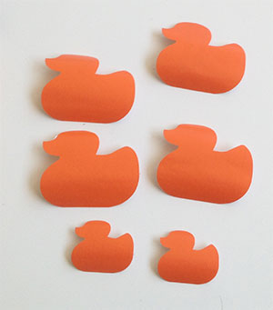

3 - Computer-Controlled Cutting
Intro
The assignment of the second week was get familiar with Computer Controlled Cutting using a lasercut to make a press fit construction kit.
Making a press-fit construction kit
As I’m a beginner with CAD and 3d modeling at first i figured out the process to make a press fit construction kit. For sure there is the need to start from a 3D object. Howeber it has to be splitted in 2D parts thet would snap together. I made some research on the web and I tried some interesting tools. A very nice software is 123D Make that transforms 3D models in constructions kit for laser cutter. Is it possible to customize a lot of parameters (number of slices, angle etc). I attended also a webinar about Grassopper held by my FabAcademy tutor Aldo Sollazzo and Efilena Baseta. It’s a very powerful tool for parametric and generative design, however I need a little bit of practice to get good results. I tried also some software to make press fit boxes boxmaker is a web app that exports pdf that could be edited to make layers and other customizations. makercase helps make boxes too and allows to choose between different joints type, you can write on the box’s faces and assign different colors to the lines to help setting up the cutter. It exports in svg format. There is also an extension for Inkscape extension for Inkscape but has only 1 type of joints. However I decide to make it in Rhino as I'm practicing that software also for 3D modelling . I decided to start with an easy project: make some characters (that look like a Danbo) that can be customized by swapping modular pieces (at the beginning I choose to change the face). As they are squared I started from the head (a cube), then I made the holes for the eyes and the mouth ( a smile and a sad face). For the body I drawn the "standard" male and female silhouettes (have a look at the image below). I also have to thing to something to make it stable so I made some "connectors".
To make the machine understand what to cut and what to engrave you have to draw things in different layers. In the image below you can see my model. Red is only for the engrave, green for the inner cut and purple for the outer ones. However I discovered later that the software of the machine (RetinaEngrave) doesn't import the Rhino layers so you have to select them manually and then set the different parameters.

As this week I have some problems to go the the Fablab in Frosinone so I used a 40 W Full Spectrum laser Cutter 20"x12" @ the FamoCose maker space in Rome. This was interesting because the laser cutter is quite different from the one in the Frosinone Fablab (power, setup and software). Due to the dimensions I had to choose to make everything in a small scale. Moreover an annoying thing is that the printer accepts only bmp and xps (Microsoft propietary) formats. The first challenge was to choose the right way to join pieces making also some experiment to check the right measure. Indeed the laser burns at least 0,1 mm and it should be considered to make the join snap correctly. I made some tests on one of the piece designed. As the cardboard is 2,5 mm thick I made a 2.5 , 2.45 and 2.4 holes. The 2.4 worked fine. The settin for the machine were: speed 100% (it has to go fast to don't burn the cardboard), power 10% and 3 passes.
This was my first test piece:
I noticed that, even if in Rhino the drawing is clear, seems that the printer sees more lines. Thus makes the printer cut twice the same piece, consuming too much material. So I "cleaned" the file checking every line and that every curve was closed. This is very important to have a good result!
You can see the video of the machine working:
And the final result on the cardboard:
This is the final result

Moreover I wanted to customize it more so I made some paper dresses for the characters.
Here's the final output and the dresses.
Vinyl cutter
Moreover I use the vinyl cutter to make some stickers. I decide to make a duck silhouette as it is related with my final project. I used a Roland Stika SV-15. It is a very nice machine, quite easy. The material moves and a cutting head cuts it. The first step to set the machine is to calibrate the lenght of the blade rotating the protective head. See the image below.
This setting is related to the material used. I used an orange sticker (bought at a local store). No other informations where reported on the material. I prepared my design with Adobe Illustrator and the I exported it as a monochrome BMP. I described it in the computer assisted design page. I imported it in the Stika software CutStudio and I used the command to recognize the outline.
However the material was to thin and at the first cut and the sticker was not moving correctly so I added a little piece of cardboard underneath.
Then the second cut was successful.

 Attribution, non-commercial, share alike.
Attribution, non-commercial, share alike.{kind=link}